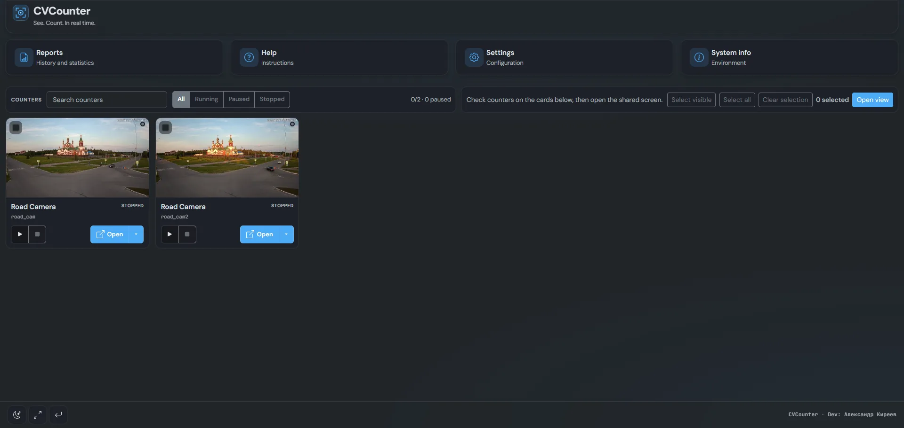

Passerby vs Entrance Volume
Deploy two detection zones: one on the exterior corridor tracking passersby and another across the entrance doors to measure entry ratios.
Optical counting of shopper footfall entering and passing retail stores, boutiques, and mall pavilions. Correlate footfall traffic with register receipts, organize shift batches, and export printable A4 logs without monthly cloud subscriptions.
Accurate optical counting of individuals passing through designated zones on your store's video cameras.
Deploy two detection zones: one on the exterior corridor tracking passersby and another across the entrance doors to measure entry ratios.
Record the count of visitors walking into specific store departments, promotional floor spaces, or gallery corridors.
Group counts into operator shifts (Batches) to easily correlate total entered customers with completed POS register transactions.

Why modern retail chains switch from expensive recurring subscriptions to open-source CVCounter.
| Feature | CVCounter (On-Premises AI) | Cloud Retail SaaS | Manual Clickers |
|---|---|---|---|
| Subscription Fees | $0 (Free Forever) | $40–$100/mo per camera | Recurring labor cost |
| Privacy (GDPR Compliant) | 100% On-Premises, zero cloud exposure | Streams sent to external clouds | Human error and subjectivity |
| Offline Operation | Runs flawlessly on store LAN without internet | Fails completely during WAN outages | Autonomous |
| Shifts & Batches | Operator shift batches, manual audits, form fields | Rigid automated daily rollups | Paper clipboard logs |
| ERP / POS Integration | REST API, Webhooks, direct CSV/JSON exports | Premium API add-on or export paywall | Manual spreadsheet transcription |
A proven deployment model for individual boutiques or retail chains with multiple stores.
Deploy CVCounter onto your in-store PC or local backroom computer using automated 1-click scripts.
Hook up existing surveillance cameras overlooking entrances and walkways via standard RTSP links.
Draw polygonal zones across entry paths and aisle entrances, and select the person class.
Group counts by shift, correlate visitor numbers with POS receipts, and print verification sheets.
Frequently asked questions regarding retail zone footfall counting.
CVCounter measures the exact count of entered shoppers per shift or hour. Correlating this traffic data with POS receipts gives you true physical store conversion: CR = (Receipts / Visitors) × 100%.
Yes. Draw one zone across the outside corridor or sidewalk to track passerby volume, and a second zone across the entrance doorway. CVCounter tallies counts per zone independently.
No. CVCounter detects anonymous human silhouettes (person class) solely to register zone crossing events. No facial scanning or biometrics are used, ensuring 100% compliance with GDPR.
The platform provides CSV/JSON file exports, batch change webhooks, and a native REST API to synchronize counts with PowerBI, Tableau, SAP, or custom store databases.